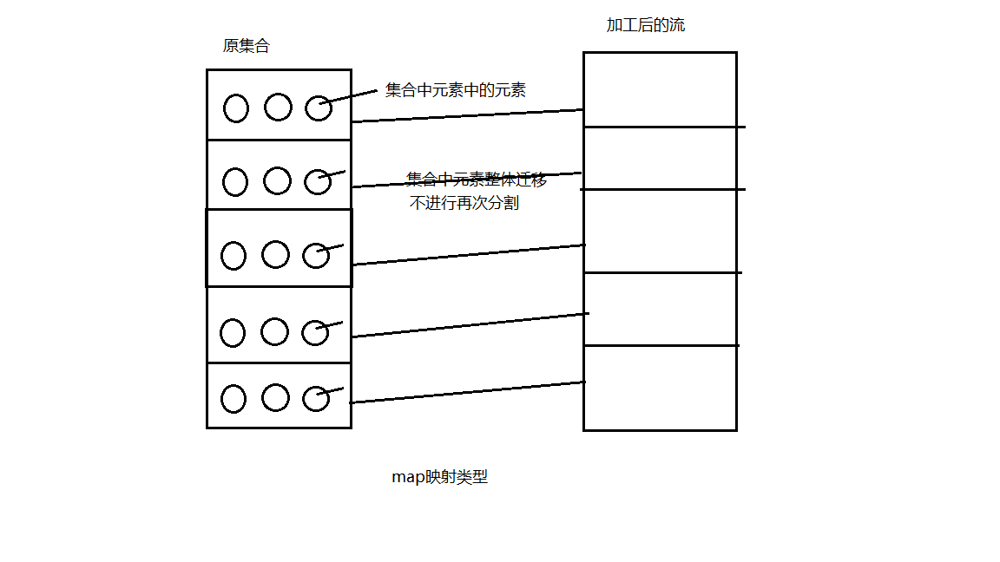
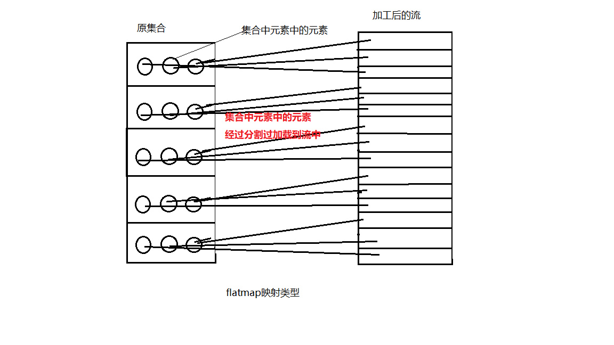

流（Stream）
1. 流的概念
流是
数据渠道，用于操作数据源，所生成一种新的元素序列。集合讲的是数据，流讲的是计算,是操作。
Stream是Java8中处理集合的关键抽象概念，它可以指定希望对集合的操作，可以执行复杂的查找、过滤和映射数据等操作。
使用Stream API 对集合的数据进行操作，类似于SQL执行的数据库查询，也可以用来并行执行操作，其提供了一种高效且易于使用的处理数据方式。
注意点：
- Stream自身
不会存储元素 - Stream
不会改变数据源对象，相反会返回产生一个持有结果的新Stream - Steam操作是
延迟执行的，这意味着他们会等到需要结果的时候才执行。
2. 流的操作步骤
三步走
2.1. 创建Stream
获取一个数据源（集合，数组），从而获取一个流
产生方式：
2.1.1 通过Collection 系列集合提供的串行流：stream()、并行流： paralleStream()
1 | List<String> list = new ArrayList<>(); |
2.1.2 通过Arrays中的静态方法stream(T[] array) 获取数组流
Arrays.stream(T[] array)的源码:
1 | public static <T> Stream<T> stream(T[] array) { |
用例：
1 | Stu[] stus = new Stu[10]; |
2.1.3 通过Stream类中的静态方法 of()
Stream.of() 源码：
1 | //1.单参泛型of |
用例：1
Stream<String> stream3 = Stream.of("hxh", "aj", "hhh");
2.1.4 使用Stream类的静态方法 iterate 创建无限流
iterate方法：
Stream<T> iterate(final T seed, final UnaryOperator<T> f)
参数 seed 种子起始值，UnaryOperator 函数式接口 继承Function<T,T> 此时参数类型符合返回值类型一致
用例：1
2
3
4
5
6
7
8
9
10
11
12
13//4.使用Stream类的静态方法 iterate 创建无限流
//Stream<T> iterate(final T seed, final UnaryOperator<T> f)
//参数 seed 种子起始值，
// UnaryOperator 函数式接口 继承Function<T,T> 此时参数类型符合返回值类型一致
Stream<Integer> stream4 = Stream.iterate(0, (x) -> x + 2);
//中间操作和终止操作
stream4.limit(5).forEach(System.out::println);
//0
//2
//4
//6
//8
2.1.5 使用Stream类的静态方法 generate创建无限流
generate方法参数为Supplier<T> 供给型接口
1 | //5.使用Stream类的静态方法 generate 创建无限流 |
2.2. 用Stream中间操作
一个中间操作链，用Stream API 对数据源数据进行操作处理
注意点：
- 若只有中间操作，则
不会执行 - 只有终止操作执行后，所有的中间操作
一次执行，此时就称为延迟加载或者惰性求值
验证是否是延迟加载：
1 | @Test |
此时只有中间操作，无终止操作，无结果，控制台无输出。
此时加上终止操作后：
1 |
|
此时结果为：
1 | 验证是否是延迟加载 |
结论：若只有中间操作，则不会执行中间操作。终止操作 执行后，所有的中间操作一次执行。最后流中只有经过操作过滤后的元素。
2.2.1 筛选与切片
迭代：
- 内部迭代：迭代过程操作由
Stream API 内部自主完成，无需自行再次编写。 - 外部迭代：由
程序编写人员自己通过一些迭代方法进行的迭代操作。
2.2.1.1 filter-过滤
Stream<T> filter(Predicate<? super T> predicate)断言型接口参数 即条件判断过滤
用例：
先创建一个Stu类List集合1
2
3
4
5
6
7List<Stu> stuList = Arrays.asList(
new Stu(1,"hh",22),
new Stu(2,"aa",22),
new Stu(3,"bb",32),
new Stu(4,"cc",42),
new Stu(5,"dd",52)
);
filter过滤实现：1
2
3
4
5
6//取age>30的Stu元素
//若只有中间操作，则不会执行
Stream<Stu> stuStream = stuList.stream()
.filter((i) -> i.getAge() > 40);
//终止操作 执行后，所有的中间操作一次执行，此时就称为延迟加载或者惰性求值
stuStream.forEach(System.out::println);
结果：1
2Stu{id=4, name='cc', age=42}
Stu{id=5, name='dd', age=52}
2.2.1.2 limit-限定元素数量
limit(n)
通过截断流，使流中元素个数不超过指定数量
1 | stuList.stream() |
结果：
1 | 测试迭代几次 |
结果发现：先通过filter()过滤，迭代到想要的过滤结果后，再根据limit(n)，直接截断流，后续操作不继续，限制其流中元素个数为n，此操作称为短路操作，短路操作也用于提高效率；
所以前3次元素不在结果中，但都进行迭代判断，打印了3次后后面的元素再次进行迭代，发现元素满足过滤条件，但limit限制只要一个，即最后一次迭代后直接截断流，结果为第一个满足过滤条件的元素。
2.2.1.3 skip-跳过元素
skip(n)
返回一个跳过前n个元素的流，若流中元素不足n个，则返回一个空流。
其与limit(n)互补
1 | //skip(n) 跳过前n个元素 |
2.2.1.4 distinct-去重
- 通过流所生成元素的
hashCode()和equals()来去除重复元素
先在stuList中添加几个重复元素用于测试：1
2
3
4
5
6
7
8
9
10List<Stu> stuList = Arrays.asList(
new Stu(1,"hh",22),
new Stu(2,"aa",22),
new Stu(3,"bb",32),
new Stu(4,"cc",42),
new Stu(4,"cc",42),
new Stu(4,"cc",42),
new Stu(4,"cc",42),
new Stu(5,"dd",52)
);
此时的Stu类中没有生成重写hashCode()和equals()方法，测试:1
2//distinct 去重
stuList.stream().distinct().forEach(System.out::println);
但是结果发现，并没有去重:1
2
3
4
5
6
7
8Stu{id=1, name='hh', age=22}
Stu{id=2, name='aa', age=22}
Stu{id=3, name='bb', age=32}
Stu{id=4, name='cc', age=42}
Stu{id=4, name='cc', age=42}
Stu{id=4, name='cc', age=42}
Stu{id=4, name='cc', age=42}
Stu{id=5, name='dd', age=52}
此时，在Stu类中生成重写hashCode()和equals()方法：
1 |
|
再次测试用例后，发现结果已经去重：1
2
3
4
5Stu{id=1, name='hh', age=22}
Stu{id=2, name='aa', age=22}
Stu{id=3, name='bb', age=32}
Stu{id=4, name='cc', age=42}
Stu{id=5, name='dd', age=52}
结论：
distinct()去重原理为通过流所生成元素的
hashCode()和equals()来去除重复元素
2.2.2 映射
2.2.2.1 map映射
<R> Stream<R> map(Function<? super T, ? extends R> mapper)
接收Lambda，将元素转换成其他形式或提取信息。- 接收一个
Function<? super T, ? extends R> mapper函数作为参数，该函数会被应用到每个元素上，并将其映射到一个新的元素。
1 | //map映射 |
结果:1
2
3
4
5
6
7
82
2
2
2
AA
BB
CC
DD
从结果看出，流中的每个元素都应用了map()里的参数中的Function函数，并返回经过Function处理的元素。
- map映射的重要应用为：即类似
SQL中的映射，获取对象中的某些属性（即数据库中的某些字段）
例如：获取Stu中的name属性1
stuList.stream().map(Stu::getName).forEach(System.out::println);
测试结果：1
2
3
4
5
6
7
8hh
aa
bb
cc
cc
cc
cc
dd
2.2.2.2 flatMap映射
- 接收一个
函数作为参数，将流中的每个值都转换成另一个流，然后把所有流连接成一个流。每个部分流中的每个值成单独小流，再串成一个整体流。
对比map映射：
- map映射是将集合中的
部分流添加到整体流中，而flatMap映射是将集合中的部分流中的每个元素单独一个个地添加到整体流中。 - map映射:
Stream<Stream<Character>>, flatMap映射：Stream<Character>
测试用例：
写一个函数用于flatMap映射
1
2
3
4
5
6
7
8
9
10
11
12
13/**
* 字符串拆分成字符后组成一个字符类型的流
* @param str
* @return
*/
public static Stream<Character> filterCharacter(String str){
List<Character> characterList = new ArrayList<>();
for (Character ch: str.toCharArray()
) {
characterList.add(ch);
}
return characterList.stream();
}用该函数分别测试map映射类型和flatMap映射类型
1
2
3
4
5
6
7
8
9
10
11
12
13
14
15
16
17
18
19
20
21
22
23
24
25
26
27
28List<String> stringList = Arrays.asList("aa", "bb", "cc", "dd");
Stream<Stream<Character>> st1 = stringList.stream()
.map(TestStream::filterCharacter);
//此时流的内容为 {{"aa"},{"bb"},{"cc"},{"dd"}} 4个单独的字符流对象组成的流
st1.forEach(System.out::println);
/* 再次遍历后
结果：4个流对象 即 Stream<Character> {{"aa"},{"bb"},{"cc"},{"dd"}}
java.util.stream.ReferencePipeline$Head@470e2030
java.util.stream.ReferencePipeline$Head@3fb4f649
java.util.stream.ReferencePipeline$Head@33833882
java.util.stream.ReferencePipeline$Head@200a570f
*/
System.out.println("----------------");
Stream<Character> st2 = stringList.stream().flatMap(TestStream::filterCharacter);
//此时流的内容为{"a","a","b","b","c","c","d","d"}
st2.forEach(System.out::println);
/* 再次遍历后
结果直接返回了单个的字符流
a
a
b
b
c
c
d
d
*/


2.2.3 排序
2.2.3.1 自然排序
sorted()
- 自然排序(Comparable方式)，按照
字典顺序进行排序 - 按照
实现的Comparable中的compare to()方法
1 | List<String> stringList = Arrays.asList("ee", "bb", "ff", "dd","哈哈","啊"); |
结果：1
2
3
4
5
6bb
dd
ee
ff
哈哈
啊
2.2.3.2 指定排序
sorted(Comparator com)
- 根据
实现Comparator接口的指定方法进行排序
1 | stuList.stream().sorted( |
2.3. 终止Stream操作
终止操作，执行中间链操作，并产生结果
2.3.1. 查找与匹配
- 匹配
match利用断言型函数接口，返回boolean值是否匹配 - 查找返回容器类
Optional类型避免空指针异常
2.3.1.1 allMatch-检查是否匹配所有元素
返回结果：
- true
匹配到了所有的元素注意：和noneMatch()的false 结果代表集合不同 - false
没有匹配到所有的元素说明匹配到条件集合中的真子集1
2
3
4
5
6
7
8
9
10
11boolean b = stuList.stream()
.allMatch((e) -> e.getAge() > 20);
System.out.println(b);//true
boolean b1 = stuList.stream()
.noneMatch((e) -> e.getAge() > 20);
System.out.println(b1);//flase
boolean b2 = stuList.stream()
.noneMatch((e) -> e.getAge() > 40);
System.out.println(b2);//flase
2.3.1.2 anyMatch-检查是否至少匹配一个元素
返回结果：
- true 匹配到了条件集合中的真子集元素，
一个或者多个 - false 一个元素都没有匹配到，
空集1
2
3
4
5
6
7boolean hhh = stuList.stream()
.anyMatch((e) -> e.getName().equals("hhh"));
System.out.println(hhh);//false
boolean hh = stuList.stream()
.anyMatch((e) -> e.getName().equals("hh"));
System.out.println(hhh);//true
2.3.1.3 noneMatch-检查是否所有元素都没有匹配到
返回结果：
- true
所有元素都没有匹配到，空集 - false 不是所有的元素都没有匹配到 即
匹配到了元素,有匹配到的元素即返回false，真子集1
2
3
4
5
6
7
8
9
10
11
12
13
14
15boolean b1 = stuList.stream()
.noneMatch((e) -> e.getAge() > 20);
System.out.println(b1);//flase
boolean b2 = stuList.stream()
.noneMatch((e) -> e.getAge() > 40);
System.out.println(b2);//flase
boolean b3 = stuList.stream()
.noneMatch((e) -> e.getAge() > 50);
System.out.println(b3);//此时集合中只有一个元素能匹配到，返回了false
boolean b4 = stuList.stream()
.noneMatch((e) -> e.getAge() > 60);
System.out.println(b3);//所有的元素都没有匹配到 返回了true
2.3.1.4 findFirst-返回第一个元素
Optional<T> findFirst();
1 | Optional<Stu> first = stuList.stream().findFirst(); |
返回第一个元素，用Optional集合类来封装，避免了空指针异常
2.3.1.5 findAny-返回当前流中的任意一个元素
Optional<T> findAny();
1 | //从集合中随便找个age>30的Stu对象 可以使用串行流stream,也可以使用parallelStream 并行流 |
2.3.1.6 count-返回流中元素总个数
long count();
1 | long count = stuList.stream().count(); |
2.3.1.7 max-返回流中的最大值
Optional<T> max(Comparator<? super T> comparator);
1 | //根据年龄大小进行正序排序找出最大值 |
1 | //提取最大年龄 先映射提取集合中每个对象的年龄 再直接进行max方法比较 最后返回一个年龄值 |
2.3.1.8 min-返回流中的最小值
Optional<T> min(Comparator<? super T> comparator);
1 | //根据年龄大小进行正序排序找出最小值 |
2.3.2. 归约与收集
2.3.2.1 reduce-将流中元素反复结合起来，得到一个值
1 | List<Integer> list = Arrays.asList(1, 2, 3, 4, 5, 6, 7, 8, 9); |
1 |
|
- 此时利用Integer类中的静态方法sum求和 无起始值,
有可能为空，则返回值自动变为Optional容器类封装过后的值
2.3.2.2 collect-将流转换为其他形式
- 接收一个
Collector接口的实现，用于Stream中元素做汇总的方法 - 利用
Collectors实用工具类中提供的很多静态实现Collector接口的方法，进行相应的转换收集操作。
1 | //收集stuList集合中的所有name值，转换为list集合 |
- 如果想转换成
其他没有的现成静态方法的数据结构集合，就使用Collectors.toCollection()方法，该方法具体参数和返回值为：Collector<T, ?, C> toCollection(Supplier<C> collectionFactory)
使用Collectors.toCollection(HashSet::new)方法 转换成HashSet集合,该方法参数为Supplier供给型函数接口，传给一个构造函数， 用例如下：
1 | //使用`Collectors.toCollection()`方法 转换成`其他没有的现成静态方法`的数据结构集合 比如HashSet |
2.3.3. Collectors类中的常用方法
2.3.3.1 counting-统计数量
Long count() 统计元素个数1
2
3Long count = stuList.stream()
.collect(Collectors.counting());
System.out.println(count);//8
2.3.3.2 averagingDouble-求平均值并转换成Double类型
<T> Collector<T, ?, Double> averagingDouble(ToDoubleFunction<? super T> mapper)
<T> Collector<T, ?, Double> averagingInt(ToIntFunction<? super T> mapper)
<T> Collector<T, ?, Double> averagingLong(ToLongFunction<? super T> mapper)
测试用例：求年龄的平均值1
2
3Double ageAve = stuList.stream()
.collect(Collectors.averagingDouble(Stu::getAge));
System.out.println(ageAve);//37.0
2.3.3.3 summingDouble-求和并转换成Double类型
<T> Collector<T, ?, Integer> summingInt(ToIntFunction<? super T> mapper)
<T> Collector<T, ?, Long> summingLong(ToLongFunction<? super T> mapper)
<T> Collector<T, ?, Double> summingDouble(ToDoubleFunction<? super T> mapper)
测试用例：求年龄之和1
2
3Double ageSum = stuList.stream()
.collect(Collectors.summingDouble(Stu::getAge));
System.out.println(ageSum);//296.0
2.3.3.4 maxBy-根据函数条件求最大值
<T> Collector<T, ?, Optional<T>> maxBy(Comparator<? super T> comparator)
测试用例：根据年龄找出最大年龄值的stu对象1
2
3
4//根据年龄找出最大年龄值的stu对象
Optional<Stu> stuOptional = stuList.stream()
.collect(Collectors.maxBy((a, b) -> Double.compare(a.getAge(), b.getAge())));
System.out.println(stuOptional.get());//Stu{id=5, name='dd', age=52}
2.3.3.5 groupingBy-分组
单级分组<T, K> Collector<T, ?, Map<K, List<T>>> groupingBy(Function<? super T, ? extends K> classifier)
测试用例：根据年龄分组1
2
3
4//根据年龄分组
Map<Integer, List<Stu>> ageGroup = stuList.stream()
.collect(Collectors.groupingBy(Stu::getAge));
System.out.println(ageGroup);
结果：1
2
3
4{32=[Stu{id=3, name='bb', age=32}],
52=[Stu{id=5, name='dd', age=52}],
22=[Stu{id=1, name='hh', age=22}, Stu{id=2, name='aa', age=22}],
42=[Stu{id=4, name='cc', age=42}, Stu{id=4, name='cc', age=42}, Stu{id=4, name='cc', age=42}, Stu{id=4, name='cc', age=42}]}
多级分组两个参数，第二个参数为Collector，即实现无限分组<T, K, A, D> Collector<T, ?, Map<K, D>> groupingBy(Function<? super T, ? extends K> classifier, Collector<? super T, A, D> downstream)
先根据name分组，再根据年龄分组1
2
3
4
5
6
7
8
9
10
11
12//先根据name分组，再根据年龄分组
Map<String, Map<String, List<Stu>>> groupmap = stuList.stream()
.collect(Collectors.groupingBy(Stu::getName, Collectors.groupingBy((e) -> {
if (e.getAge() <= 20) {
return "年轻人";
} else if (e.getAge() <= 50) {
return "中年人";
} else {
return "老年人";
}
})));
System.out.println(groupmap);
结果：1
2
3
4
5{dd={老年人=[Stu{id=5, name='dd', age=52}]},
cc={中年人=[Stu{id=4, name='cc', age=42}, Stu{id=4, name='cc', age=42}, Stu{id=4, name='cc', age=42}, Stu{id=4, name='cc', age=42}]},
bb={中年人=[Stu{id=3, name='bb', age=32}]},
aa={中年人=[Stu{id=2, name='aa', age=22}]},
hh={中年人=[Stu{id=1, name='hh', age=22}]}}
2.3.3.6 partitioningBy-分区
满足条件的分到一个区，不满足条件分到另一个区
true , false Map<Boolean,List<>>
测试用例：是否年龄大于40，分两个区1
2
3Map<Boolean, List<Stu>> booleamGroup = stuList.stream()
.collect(Collectors.partitioningBy((e) -> e.getAge() > 40));
System.out.println(booleamGroup);
结果：1
2
3
4
5
6
7
8
9
10
11
12
13
14{
false=[
Stu{id=1, name='hh', age=22},
Stu{id=2, name='aa', age=22},
Stu{id=3, name='bb', age=32}
],
true=[
Stu{id=4, name='cc', age=42},
Stu{id=4, name='cc', age=42},
Stu{id=4, name='cc', age=42},
Stu{id=4, name='cc', age=42},
Stu{id=5, name='dd', age=52}
]
}
2.3.3.7 summarizingDouble-计算方法总括函数
<T> Collector<T, ?, DoubleSummaryStatistics> summarizingDouble(ToDoubleFunction<? super T> mapper)
summarizingDouble
返回 DoubleSummaryStatistics 类型 可以直接调用各种计算方法
summarizingInt
summarizingLong
实例：1
2
3
4
5
6
7DoubleSummaryStatistics ageSummaryStatis = stuList.stream()
.collect(Collectors.summarizingDouble(Stu::getAge));
ageSummaryStatis.getAverage();
ageSummaryStatis.getCount();
ageSummaryStatis.getMax();
ageSummaryStatis.getMin();
ageSummaryStatis.getSum();
2.3.3.7 joining-连接字符串
Collector<CharSequence, ?, String> joining()
测试用例：将stuList集合中所有的名字连接在一起1
2
3
4//将集合中所有的名字连接在一起
String allNameStr = stuList.stream().map(Stu::getName)
.collect(Collectors.joining());
System.out.println(allNameStr);//hhaabbccccccccdd
测试用例：将stuList集合中所有的名字连接在一起，并使用逗号分割
1 | //将集合中所有的名字连接在一起,并逗号分割 |
2.3.3.8 toList- 返回集合
1 | List kcResList = kcResInKkxyList.stream().filter((e) -> kssj.equals(e.getKssj())).collect(Collectors.toList()); |